1、怎样获取操作手册？
点击《操作手册》即可下载系统操作手册。
2、系统支持那些浏览器？
基本上常见浏览器均支持。以下是经过测试能正常访问系统的浏览器：
我们推荐使用chrome（谷歌）浏览器。可通过地址http://rj.baidu.com/soft/detail/14744.html 下载chrome。
系统支持的最小分辨率为：1024*768。如果小于此分辨率，系统某些页面会显示不正常。
| 浏览器名称 | 版本 |
| chrome(谷歌) | 10+ |
| firefox(火狐) | 4+ |
| safari(苹果) | 5+ |
| opera(欧朋) | 11.1+ |
| 360、猎豹等 | 极速模式 |
| ie | 9+ |
我们推荐使用chrome（谷歌）浏览器。可通过地址http://rj.baidu.com/soft/detail/14744.html 下载chrome。
系统支持的最小分辨率为：1024*768。如果小于此分辨率，系统某些页面会显示不正常。
3、系统字体太小，我怎样能调大字体？
可通过调整浏览器的缩放比例来调整字体。以下是部分浏览器的调整方法。
1）chrome：打开谷歌浏览器---点击右上方自定义及控制按钮---选择网页缩放中加减号调节
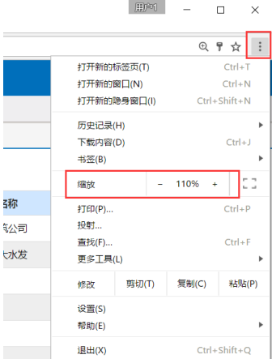
2）firefox：打开火狐浏览器---点击右上方打开菜单按钮---直接调节弹出框中的加减号来调节页面
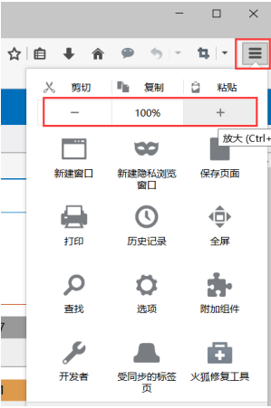
3）IE：打开IE浏览器---点击右上方工具按钮---选择缩放后---再点击你想选择的缩放比例
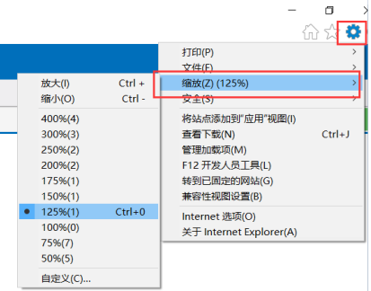
4）opera：打开欧朋浏览器---点击左上方菜单按钮---选择缩放中的向左向右方向键调节
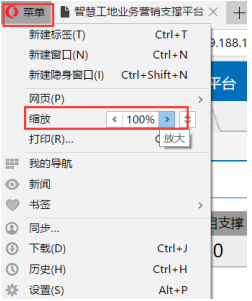
5）360：打开360浏览器---点击右上方打开菜单按钮---选择网页缩放后---再点击你想选择的缩放比例
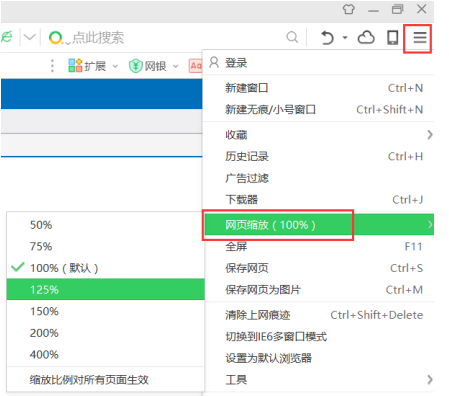
6）safari：打开苹果浏览器---利用快捷键Ctrl和'+'或者'-'键来控制页面的放大和缩小
1）chrome：打开谷歌浏览器---点击右上方自定义及控制按钮---选择网页缩放中加减号调节
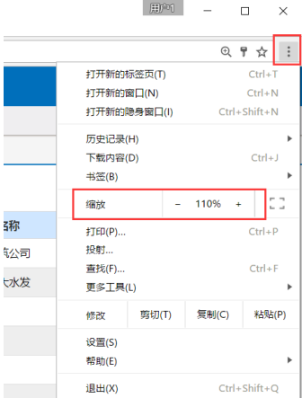
2）firefox：打开火狐浏览器---点击右上方打开菜单按钮---直接调节弹出框中的加减号来调节页面
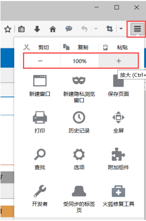
3）IE：打开IE浏览器---点击右上方工具按钮---选择缩放后---再点击你想选择的缩放比例
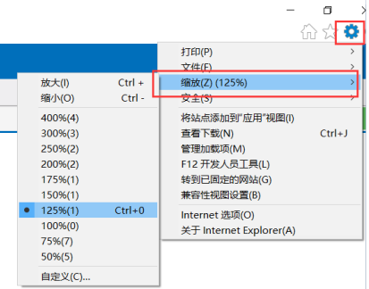
4）opera：打开欧朋浏览器---点击左上方菜单按钮---选择缩放中的向左向右方向键调节
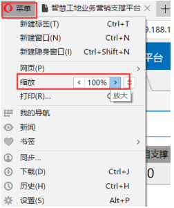
5）360：打开360浏览器---点击右上方打开菜单按钮---选择网页缩放后---再点击你想选择的缩放比例
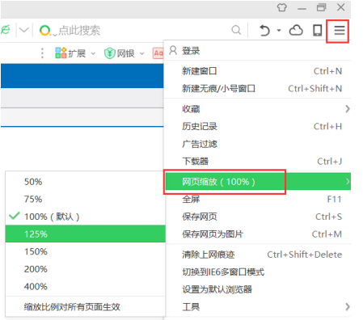
6）safari：打开苹果浏览器---利用快捷键Ctrl和'+'或者'-'键来控制页面的放大和缩小
4、文件无法下载?
文件无法下载是因为浏览器拦截了。需要让浏览器信任系统。以下是部分浏览器的操作方法。
1）chrome：如果浏览器拦截了，地址栏出现下图的图标。
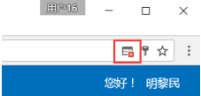
点击地址栏中图标
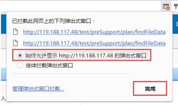
2）IE：浏览器拦截时出现下图的拦截提示。

点击'用于此站点的选项';
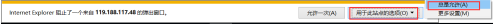
3）opera：如果浏览器拦截了，地址栏出现下图的图标：1）chrome：如果浏览器拦截了，地址栏出现下图的图标。
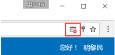
点击地址栏中图标
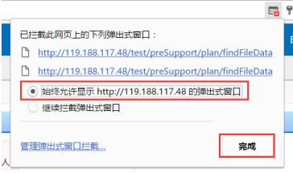
2）IE：浏览器拦截时出现下图的拦截提示。
点击'用于此站点的选项';
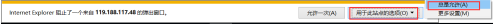
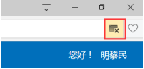
点击图标：
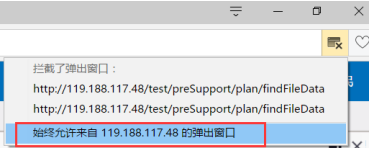
4）firefox：浏览器拦截时出现下图的拦截提示：
点击'选项'：
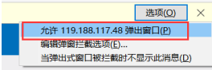